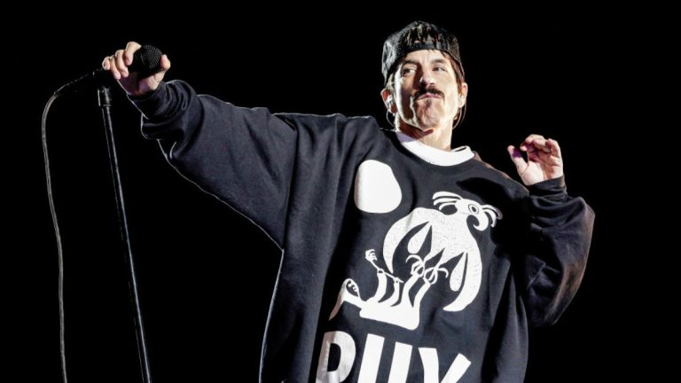

Historia
El núcleo de la banda fue formado en la preparatoria Fairfax High School como Anthym con el chileno Alain Johannes como vocalista. Anthony Kiedis, quien estuvo haciendo una pequeña carrera como actor juvenil televisivo bajo el apodo de Cole Dammett, solía ser su presentador y "hypeman". En febrero de 1983, Anthony fue pedido por su amigo Gary Allen de la banda Neighbour's Voices para que lo teloneara junto a sus amigos.
Bajo la influencia principal de las bandas neoyorkinas Defunkty Grandmaster Flash and the Furious Five,armaron una banda para la ocasión con el nombre de "Tony Flow and the Miraculously Majestic Masters of Mayhem".El rendimiento en vivo de la banda fue tan bueno que se les pidió regresar la semana siguiente. Debido a este inesperado éxito, los miembros de la banda cambiaron el nombre por el de Red Hot Chili Peppers, debido a que vieron el nombre original un poco incómodo. Luego siguieron tocando en varios conciertos por clubes de Los Ángeles y cabarets como el Kit Kat Club. Es en estos primeros momentos cuando empiezan a hacerse populares por sus actuaciones en las que aparecían completamente desnudos, con solo un calcetín en los genitales (Sock on Cock). Seis de las canciones que tocaban en esos shows fueron grabadas en su primer demo.
The Red Hot Chili Peppers (1984)
Varios meses después de su primera actuación, la banda firmó con la compañía discográfica EMI. Pero dos semanas antes, What Is This? (el nombre posterior de los Anthym) había obtenido contrato con MCA, por lo que Slovak e Irons dejaron Red Hot Chili Peppers y se dedicaron a What Is This?.Kiedis y Flea no pensaron en disolver la banda, sino que decidieron reclutar a nuevos miembros. Cliff Martínez, un conocido de Flea de la banda punk The Weirdos, pidió sumarse a los Chili Peppers poco después. También se uniría Jack Sherman, "el rey pirata".

Andy Gill, el guitarrista de Gang of Four, también pioneros en la incorporación del funk al estilo punk, fue contratado para producir su primer álbum.A pesar de que Kiedis y Flea dudaron, él empujó a la banda a tocar música más viable comercialmente. En un principio Kiedis quería titular el disco True men don't kill coyotes, pero la compañía quería que el título fuese The Red Hot Chili Peppers, a lo que el grupo tuvo que acceder finalmente. El disco salió el 10 de agosto de 1984 y fue un fracaso comercial.Vendió aproximadamente 500.000 unidades y obtuvo poco reconocimiento. La siguiente gira estuvo un poco mejor, aunque Kiedis y Sherman tenían una relación muy tensa. Sherman fue despedido poco después y Slovak regresó a la banda, después de hartarse de What Is This?.
Freaky Styley (1985)
George Clinton (el líder de Parliament y Funkadelic) fue elegido (a petición de Anthony y Flea) para producir el próximo álbum de la banda, Freaky Styley.
El álbum fue grabado en el Detroit's famed R&B and funky United Sound Systems studios en el borde de la Universidad Estatal de Wayne.18Clinton combinó diversos elementos del punk y el funk en el repertorio de la banda, que permitieron incorporar variedad a la música. De hecho en la canción "Hollywood", que es una adaptación del tema "África" de los legendarios funkateers de Nueva Orleans The Meters, participa en el Saxofón el músico Maceo Parker, que al igual que el bajista Bootsy Collins, había grabado para el padre del Funk, James Brown, y el mismo Clinton. El álbum apenas superó en ventas al anterior; aunque, eso sí, pudieron ser invitados a un importante festival de rock en Alemania (Rockpalast 85) como invitados de Clinton y la P-Funk All-Stars, además de aparecer tocando el epiléptico tema "Blackeyed Blonde" en una escena de la película sobre skaters Trashin dirigida por David Winters el año siguiente.
El álbum fue publicado el 16 de agosto de 1985,pero aunque la banda tuvo una relación mucho mejor con Clinton que con Gill, el disco fue apenas más exitoso que el primero, vendiendo 650.000 copias y no tuvo llegada a ningún Chart, pese a contar con la producción de una leyenda viviente como el "Dr. Funkenstein". La posterior gira no fue considerada lo suficientemente productiva para la banda.
En 1986 compusieron para la película Tough Guys el tema "Set It Straight", que todavía no ha sido publicado en ningún álbum. En una escena del filme se puede ver a Anthony Kiedis, Flea, Hillel Slovak y Cliff Martinez tocando parte de este tema. Ese mismo año también colaboraron en el tema "Reputation" para el álbum de Andre Foxxe I'm Funk And I'm Proud.
 The Uplift Mofo Party Plan (1987)
Cliff Martínez partió del grupo en el verano de 1986. Jack Irons se quedó sin trabajo y, separado de otros compromisos, se reintegró al grupo. Anthony, Flea y Hillel quedaron muy sorprendidos. Posteriormente, Anthony fue despedido por su adicción a las drogas, pero al mes volvió. El grupo eligió a Michael Beinhorn, quien había colaborado con Herbie Hancock, y formado grupos como Material y Tackheads, para producir su próximo álbum que empezó a tener forma, usando la misma mezcla de funk y ritmos que Freaky Styley, pero con sonidos mucho más agresivos de punk y metal. Reuniéndose los cuatro integrantes, empezaron el proceso de creación.
El 29 de septiembre de 1987, The Uplift Mofo Party Plan salió a la venta, convirtiéndose en el primer álbum de los Red Hot Chili Peppers en aparecer en algún Chart. A pesar de que llegaron solo al puesto 148 en el Billboard Hot 200, fue un éxito importante en comparación con los dos primeros álbumes a pesar de haber vendido nada más que 750.000 copias aproximadamente.
Durante este período, Kiedis y Slovak estaban desarrollando graves hábitos de adicción a las drogas, a menudo hasta abandonaban la banda. La adicción a la heroína llevó a Slovak a la muerte el 25 de junio de 1988 a los 26 años de edad. Kiedis abandonó la ciudad y no asistió al funeral de Slovak, considerando que la situación era surrealista. Huyó a México donde permaneció unos meses para desintoxicarse. Jack Irons, posteriormente, abandonó el grupo, diciendo que él no quería ser parte de un grupo donde sus amigos estaban muriendo.
The Uplift Mofo Party Plan (1987)
Cliff Martínez partió del grupo en el verano de 1986. Jack Irons se quedó sin trabajo y, separado de otros compromisos, se reintegró al grupo. Anthony, Flea y Hillel quedaron muy sorprendidos. Posteriormente, Anthony fue despedido por su adicción a las drogas, pero al mes volvió. El grupo eligió a Michael Beinhorn, quien había colaborado con Herbie Hancock, y formado grupos como Material y Tackheads, para producir su próximo álbum que empezó a tener forma, usando la misma mezcla de funk y ritmos que Freaky Styley, pero con sonidos mucho más agresivos de punk y metal. Reuniéndose los cuatro integrantes, empezaron el proceso de creación.
El 29 de septiembre de 1987, The Uplift Mofo Party Plan salió a la venta, convirtiéndose en el primer álbum de los Red Hot Chili Peppers en aparecer en algún Chart. A pesar de que llegaron solo al puesto 148 en el Billboard Hot 200, fue un éxito importante en comparación con los dos primeros álbumes a pesar de haber vendido nada más que 750.000 copias aproximadamente.
Durante este período, Kiedis y Slovak estaban desarrollando graves hábitos de adicción a las drogas, a menudo hasta abandonaban la banda. La adicción a la heroína llevó a Slovak a la muerte el 25 de junio de 1988 a los 26 años de edad. Kiedis abandonó la ciudad y no asistió al funeral de Slovak, considerando que la situación era surrealista. Huyó a México donde permaneció unos meses para desintoxicarse. Jack Irons, posteriormente, abandonó el grupo, diciendo que él no quería ser parte de un grupo donde sus amigos estaban muriendo.
 Mother's Milk (1989)
Artículo principal: Mother's Milk
Ante la muerte de Hillel Slovak la banda en primer lugar contrató a D.H. Peligro de los Dead Kennedys como batería y al guitarrista de P-Funk DeWayne "Blackbyrd" McKnight, pero estos no contaban con la chispa suficiente como para continuar en la banda por lo que serían despedidos. Posteriormente se contrataría a John Frusciante como guitarrista. Frusciante había realizado una audición para ingresar a la banda Thelonious Monster, pero D.H. Peligro le habló a Flea de él y unos días más tarde improvisaron en el garaje de Flea, que decidió junto a Kiedis que era el reemplazo perfecto para Hillel. Estas improvisaciones posteriormente se convirtieron en algunas canciones como Pretty Little Ditty, tema que la banda angelina Crazy Town, utilizó como base en su sencillo Butterfly.
Tres semanas antes de la entrada al estudio la banda continuaba sin batería, y un amigo de la banda les recomendó a Chad Smith, un baterista que había visto y que se "desayunaba a la batería cada mañana". Se le decidió dar una oportunidad a Chad. En esa audición, Chad abrumó a la banda por la fuerza y complejidad de sus ritmos. Después de esta sesión de improvisación, se decidió admitir a Chad como baterista de la banda.
La banda entró en el estudio, pero esta grabación estuvo entorpecida por los conflictos con el productor del álbum Michael Beinhorn, que tenía como propuesta que John tocara riffs de heavy metal, lo cual molestó a John, ya que este estilo no se ajustaba al suyo. Este estilo se puede ver en canciones como Stone Cold Bush.
Mother's Milk fue lanzado el 15 de agosto de 1989 y tuvo con la canción tributo a Hillel Slovak "Knock Me Down" que fue su primera canción en llegar al top 10 de las canciones de rock. También tuvieron un gran éxito con la interpretación de Higher Ground de Stevie Wonder. Con su gran línea de bajo en 'slap' y ritmo rápido de funk, "Higher Ground" representó la perfecta mezcla del Motown de los 70 con el punk. Mother's Milk vendió casi 3 millones de copias alrededor del globo. Otros sencillos de la banda fueron Knock Me Down y Taste the Pain. Una canción sacada como bonus track en diferentes sencillos, llamada Show Me Your Soul fue la banda sonora de la película Pretty Woman.
Mother's Milk (1989)
Artículo principal: Mother's Milk
Ante la muerte de Hillel Slovak la banda en primer lugar contrató a D.H. Peligro de los Dead Kennedys como batería y al guitarrista de P-Funk DeWayne "Blackbyrd" McKnight, pero estos no contaban con la chispa suficiente como para continuar en la banda por lo que serían despedidos. Posteriormente se contrataría a John Frusciante como guitarrista. Frusciante había realizado una audición para ingresar a la banda Thelonious Monster, pero D.H. Peligro le habló a Flea de él y unos días más tarde improvisaron en el garaje de Flea, que decidió junto a Kiedis que era el reemplazo perfecto para Hillel. Estas improvisaciones posteriormente se convirtieron en algunas canciones como Pretty Little Ditty, tema que la banda angelina Crazy Town, utilizó como base en su sencillo Butterfly.
Tres semanas antes de la entrada al estudio la banda continuaba sin batería, y un amigo de la banda les recomendó a Chad Smith, un baterista que había visto y que se "desayunaba a la batería cada mañana". Se le decidió dar una oportunidad a Chad. En esa audición, Chad abrumó a la banda por la fuerza y complejidad de sus ritmos. Después de esta sesión de improvisación, se decidió admitir a Chad como baterista de la banda.
La banda entró en el estudio, pero esta grabación estuvo entorpecida por los conflictos con el productor del álbum Michael Beinhorn, que tenía como propuesta que John tocara riffs de heavy metal, lo cual molestó a John, ya que este estilo no se ajustaba al suyo. Este estilo se puede ver en canciones como Stone Cold Bush.
Mother's Milk fue lanzado el 15 de agosto de 1989 y tuvo con la canción tributo a Hillel Slovak "Knock Me Down" que fue su primera canción en llegar al top 10 de las canciones de rock. También tuvieron un gran éxito con la interpretación de Higher Ground de Stevie Wonder. Con su gran línea de bajo en 'slap' y ritmo rápido de funk, "Higher Ground" representó la perfecta mezcla del Motown de los 70 con el punk. Mother's Milk vendió casi 3 millones de copias alrededor del globo. Otros sencillos de la banda fueron Knock Me Down y Taste the Pain. Una canción sacada como bonus track en diferentes sencillos, llamada Show Me Your Soul fue la banda sonora de la película Pretty Woman.